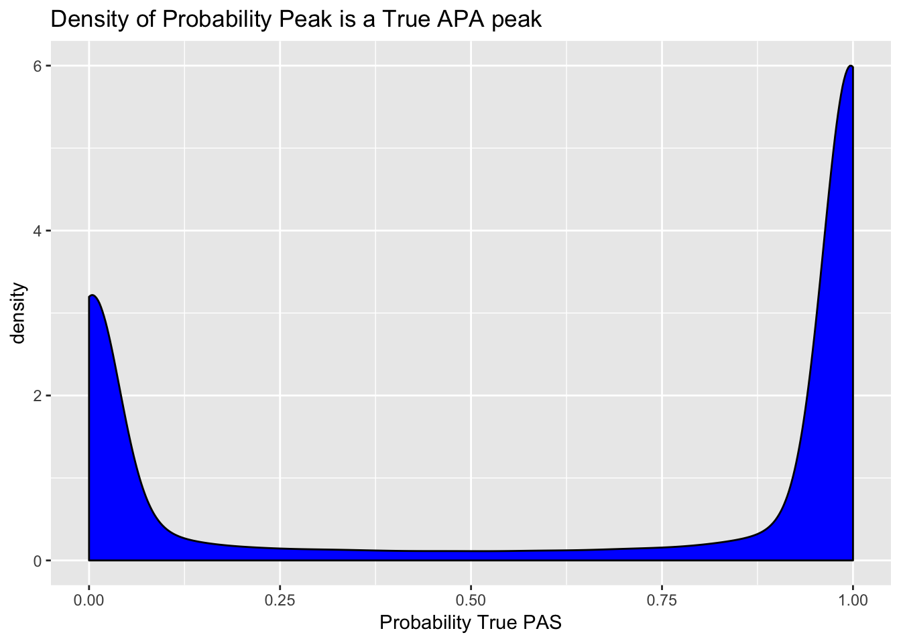
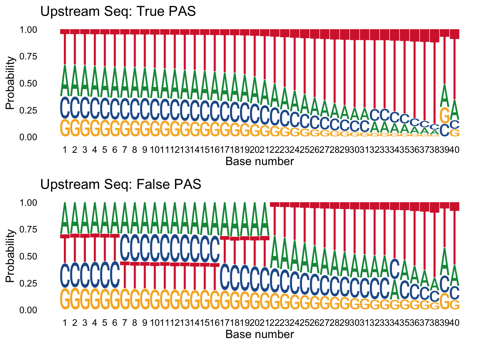
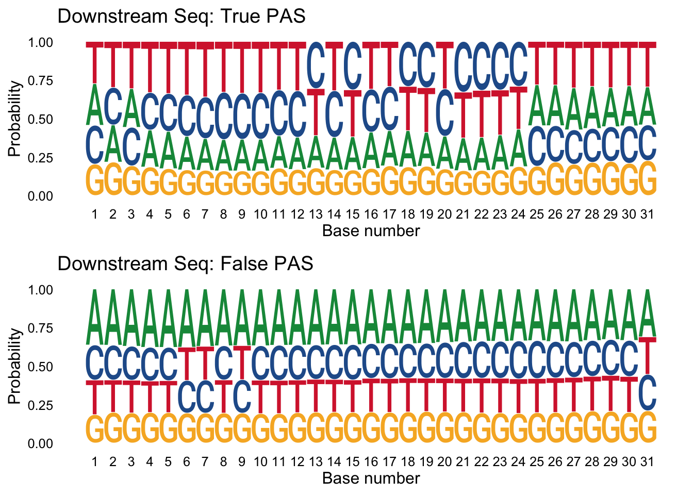
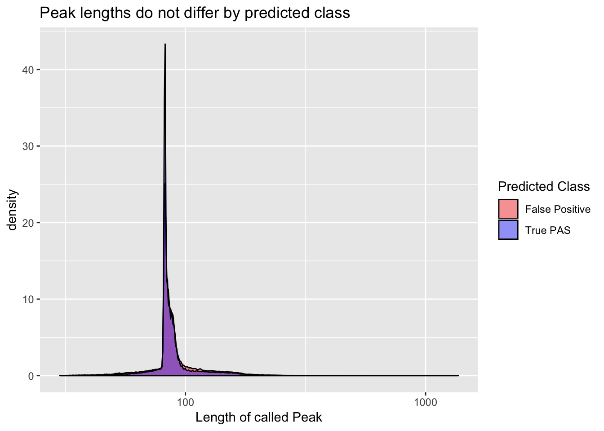
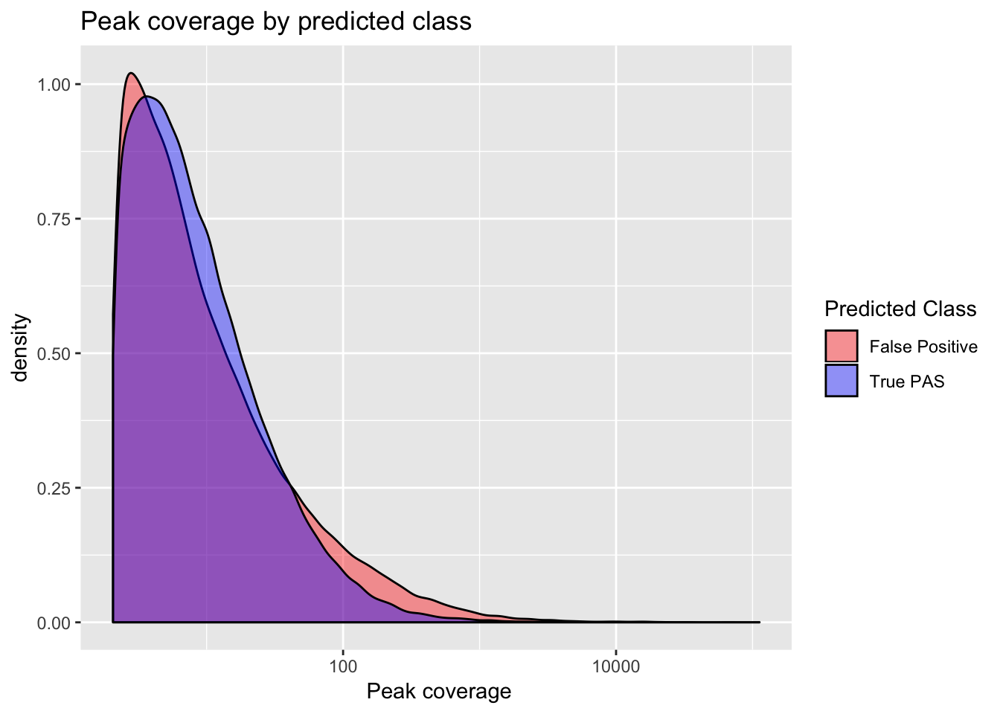

Last updated: 2018-07-26
workflowr checks: (Click a bullet for more information) ✔ R Markdown file: up-to-date
Great! Since the R Markdown file has been committed to the Git repository, you know the exact version of the code that produced these results.
✔ Environment: empty
Great job! The global environment was empty. Objects defined in the global environment can affect the analysis in your R Markdown file in unknown ways. For reproduciblity it’s best to always run the code in an empty environment.
✔ Seed:
set.seed(12345)
The command set.seed(12345) was run prior to running the code in the R Markdown file. Setting a seed ensures that any results that rely on randomness, e.g. subsampling or permutations, are reproducible.
✔ Session information: recorded
Great job! Recording the operating system, R version, and package versions is critical for reproducibility.
✔ Repository version: 31118c6
wflow_publish or wflow_git_commit). workflowr only checks the R Markdown file, but you know if there are other scripts or data files that it depends on. Below is the status of the Git repository when the results were generated:
Ignored files:
Ignored: .DS_Store
Ignored: .Rhistory
Ignored: .Rproj.user/
Ignored: output/.DS_Store
Untracked files:
Untracked: data/18486.genecov.txt
Untracked: data/APApeaksYL.total.inbrain.bed
Untracked: data/YL-SP-18486-T_S9_R1_001-genecov.txt
Untracked: data/bedgraph_peaks/
Untracked: data/bin200.5.T.nuccov.bed
Untracked: data/bin200.Anuccov.bed
Untracked: data/bin200.nuccov.bed
Untracked: data/clean_peaks/
Untracked: data/gene_cov/
Untracked: data/leafcutter/
Untracked: data/nuc6up/
Untracked: data/reads_mapped_three_prime_seq.csv
Untracked: data/smash.cov.results.bed
Untracked: data/smash.cov.results.csv
Untracked: data/smash.cov.results.txt
Untracked: data/smash_testregion/
Untracked: data/ssFC200.cov.bed
Untracked: output/picard/
Untracked: output/plots/
Untracked: output/qual.fig2.pdf
Unstaged changes:
Modified: analysis/dif.iso.usage.leafcutter.Rmd
Modified: analysis/explore.filters.Rmd
Modified: analysis/test.max2.Rmd
Modified: code/Snakefile
| File | Version | Author | Date | Message |
|---|---|---|---|---|
| Rmd | 31118c6 | Briana Mittleman | 2018-07-26 | add length and coverage analysis |
| html | f3eaa0b | Briana Mittleman | 2018-07-25 | Build site. |
| Rmd | be5fac4 | Briana Mittleman | 2018-07-25 | explore cleanup results |
| html | 3a5a8fe | Briana Mittleman | 2018-07-25 | Build site. |
| Rmd | d8394a3 | Briana Mittleman | 2018-07-25 | start clean up code analysis |
Install new packages:
source("https://bioconductor.org/biocLite.R")
biocLite("BSgenome.Hsapiens.UCSC.hg19")Load Packages:
library(workflowr)This is workflowr version 1.1.1
Run ?workflowr for help getting startedlibrary(cleanUpdTSeq)Loading required package: BiocGenericsLoading required package: parallel
Attaching package: 'BiocGenerics'The following objects are masked from 'package:parallel':
clusterApply, clusterApplyLB, clusterCall, clusterEvalQ,
clusterExport, clusterMap, parApply, parCapply, parLapply,
parLapplyLB, parRapply, parSapply, parSapplyLBThe following objects are masked from 'package:stats':
IQR, mad, sd, var, xtabsThe following objects are masked from 'package:base':
anyDuplicated, append, as.data.frame, basename, cbind,
colMeans, colnames, colSums, dirname, do.call, duplicated,
eval, evalq, Filter, Find, get, grep, grepl, intersect,
is.unsorted, lapply, lengths, Map, mapply, match, mget, order,
paste, pmax, pmax.int, pmin, pmin.int, Position, rank, rbind,
Reduce, rowMeans, rownames, rowSums, sapply, setdiff, sort,
table, tapply, union, unique, unsplit, which, which.max,
which.minLoading required package: BSgenomeLoading required package: S4VectorsLoading required package: stats4
Attaching package: 'S4Vectors'The following object is masked from 'package:base':
expand.gridLoading required package: IRangesLoading required package: GenomeInfoDbLoading required package: GenomicRangesLoading required package: BiostringsLoading required package: XVector
Attaching package: 'Biostrings'The following object is masked from 'package:base':
strsplitLoading required package: rtracklayerLoading required package: BSgenome.Drerio.UCSC.danRer7Loading required package: seqinr
Attaching package: 'seqinr'The following object is masked from 'package:Biostrings':
translateLoading required package: e1071library(GenomicRanges)
library(BSgenome.Hsapiens.UCSC.hg19)
library(ggseqlogo)
library(ggplot2)
library(dplyr)
Attaching package: 'dplyr'The following object is masked from 'package:seqinr':
countThe following objects are masked from 'package:Biostrings':
collapse, intersect, setdiff, setequal, unionThe following object is masked from 'package:XVector':
sliceThe following objects are masked from 'package:GenomicRanges':
intersect, setdiff, unionThe following object is masked from 'package:GenomeInfoDb':
intersectThe following objects are masked from 'package:IRanges':
collapse, desc, intersect, setdiff, slice, unionThe following objects are masked from 'package:S4Vectors':
first, intersect, rename, setdiff, setequal, unionThe following objects are masked from 'package:BiocGenerics':
combine, intersect, setdiff, unionThe following objects are masked from 'package:stats':
filter, lagThe following objects are masked from 'package:base':
intersect, setdiff, setequal, unionlibrary(gridExtra)
Attaching package: 'gridExtra'The following object is masked from 'package:dplyr':
combineThe following object is masked from 'package:BiocGenerics':
combinelibrary(tidyr)
Attaching package: 'tidyr'The following object is masked from 'package:S4Vectors':
expandI am also going to install cleanUpdTSeq on my midway account because I will want to write scripts using this package that can take in any bedfile and will write out the file with the classification results. I can also have the cutoff option be a parameter that will change.
The test set should have chr, start, end, name, score, strand.
#!/bin/rscripts
# usage: ./cleanupdtseq.R in_bedfile, outfile, cuttoff
#this script takes a putative peak file, and output file name and a cuttoff for classification and outputs the file with all of the seqs classified.
#use optparse for management of input arguments I want to be able to imput the 6up nuc file and write out a filter file
#script needs to run outside of conda env. should module load R in bash script when I submit it
library(optparse)
library(dplyr)
library(tidyr)
library(ggplot2)
library(cleanUpdTSeq)
library(GenomicRanges)
library(BSgenome.Hsapiens.UCSC.hg19)
option_list = list(
make_option(c("-f", "--file"), action="store", default=NA, type='character',
help="input file"),
make_option(c("-o", "--output"), action="store", default=NA, type='character',
help="output file"),
make_option(c("-c", "--cutoff"), action="store", default=NA, type='double',
help="assignment cuttoff")
)
opt_parser <- OptionParser(option_list=option_list)
opt <- parse_args(opt_parser)
#interrupt execution if no file is supplied
if (is.null(opt$file)){
print_help(opt_parser)
stop("Need input file", call.=FALSE)
}
#imput file for test data
testSet <- read.table(file = opt$file, sep="\t", header=TRUE)
peaks <- BED2GRangesSeq(testSet, withSeq=FALSE)
#build vector with human genome
testSet.NaiveBayes <- buildFeatureVector(peaks, BSgenomeName=Hsapiens,
upstream=40, downstream=30,
wordSize=6, alphabet=c("ACGT"),
sampleType="unknown",
replaceNAdistance=30,
method="NaiveBayes",
ZeroBasedIndex=1, fetchSeq=TRUE)
#classfy sites with built in classsifer
data(classifier)
testResults <- predictTestSet(testSet.NaiveBayes=testSet.NaiveBayes,
classifier=classifier,
outputFile=NULL,
assignmentCutoff=opt$cutoff)
#write results
write.table(testResults, file=opt$output, quote = F, row.names = F, col.names = T) I will need to module load R in the bash script that writes this.
#!/bin/bash
#SBATCH --job-name=clean_filteredpeakstotal
#SBATCH --account=pi-yangili1
#SBATCH --time=24:00:00
#SBATCH --output=clean_filteredpeakstotal.out
#SBATCH --error=clean_filteredpeakstotal.err
#SBATCH --partition=broadwl
#SBATCH --mem=40G
#SBATCH --mail-type=END
module load R
Rscript cleanupdtseq.R -f /project2/gilad/briana/threeprimeseq/data/clean.peaks/APAfiltered_named.bed -o /project2/gilad/briana/threeprimeseq/data/clean.peaks/clean_APAfilteredTotal.txt -c .5
#add names to bed file with peaks
#awk '{print $1 "\t" $2 "\t" $3 "\t" $1 ":" $2 ":" $3 "\t" $4 "\t" $5 "\t" $6}' APAfiltered.bed > APAfiltered_named.bed
seq 1 199880 > peak.num.txt
paste APAfiltered.bed peak.num.txt | column -s $'\t' -t > temp
awk '{print $1 "\t" $2 "\t" $3 "\t" $7 "\t" $4 "\t" $5 "\t" $6}' temp > APAfiltered_named.bed
This cuttoff results in a move from 199880 to 125825 called sites.
peaks=read.table("../data/clean_peaks/clean_APAfilteredTotal.txt", header = T, stringsAsFactors = F)Plot the density of the probabilities. I expect a bimodal distribution.
ggplot(peaks, aes(probTrue)) + geom_density(fill="blue") + labs(title="Density of Probability Peak is a True APA peak", x="Probability True PAS")
| Version | Author | Date |
|---|---|---|
| f3eaa0b | Briana Mittleman | 2018-07-25 |
Next I want to make logo plots for the upstream sequences seperated by class. I expect to see an overrepresentation of A/T in the upstream of the false samples.
true_peaks=peaks %>% filter(pred.class==1)
false_peaks=peaks %>% filter(pred.class==0)I can extract just the upstream seq for each class.
true_peaks_up=peaks %>% filter(pred.class==1) %>% select(UpstreamSeq)
false_peaks_up= peaks %>% filter(pred.class==0) %>% select(UpstreamSeq)trueplot_up=ggseqlogo(true_peaks_up,seq_type='dna', method = 'prob') + labs(x="Base number", title="Upstream Seq: True PAS")
falseplot_up=ggseqlogo(false_peaks_up,seq_type='dna', method = 'prob') + labs(x="Base number", title="Upstream Seq: False PAS")
gridExtra::grid.arrange(trueplot_up,falseplot_up)
| Version | Author | Date |
|---|---|---|
| f3eaa0b | Briana Mittleman | 2018-07-25 |
I can do the same thing for the downstream seq.
true_peaks_down=peaks %>% filter(pred.class==1) %>% select(DownstreamSeq)
false_peaks_down= peaks %>% filter(pred.class==0) %>% select(DownstreamSeq)
trueplot_down=ggseqlogo(true_peaks_down,seq_type='dna', method = 'prob') + labs(x="Base number", title="Downstream Seq: True PAS")
falseplot_down=ggseqlogo(false_peaks_down,seq_type='dna', method = 'prob') + labs(x="Base number", title="Downstream Seq: False PAS")
gridExtra::grid.arrange(trueplot_down,falseplot_down)
| Version | Author | Date |
|---|---|---|
| f3eaa0b | Briana Mittleman | 2018-07-25 |
I can join all of the information from the original bed with the results using a join by the name.
names=c("chr", "start", "end", "PeakName", "Cov", "Strand", "score")
YL_peaks=read.table("../data/clean_peaks/APAfiltered_named.bed", col.names = names)full_peaks= inner_join(YL_peaks, peaks, by="PeakName") %>% mutate(length=end-start)
full_peaks$pred.class= as.factor(full_peaks$pred.class)ggplot(full_peaks, aes(length, group=pred.class, fill=pred.class)) + geom_density(alpha=.4) + scale_x_log10() + labs(title="Peak lengths do not differ by predicted class", x="Length of called Peak") + scale_fill_manual(values=c("red", "blue"), name="Predicted Class", labels=c("False Positive", "True PAS"))
ggplot(full_peaks, aes(x=Cov, group=pred.class, fill=pred.class)) + geom_density(alpha=.4) + scale_x_log10() + labs(title="Peak coverage by predicted class", x=" Peak coverage") + scale_fill_manual(values=c("red", "blue"), name="Predicted Class", labels=c("False Positive", "True PAS")) ```
sessionInfo()R version 3.5.1 (2018-07-02)
Platform: x86_64-apple-darwin15.6.0 (64-bit)
Running under: macOS Sierra 10.12.6
Matrix products: default
BLAS: /Library/Frameworks/R.framework/Versions/3.5/Resources/lib/libRblas.0.dylib
LAPACK: /Library/Frameworks/R.framework/Versions/3.5/Resources/lib/libRlapack.dylib
locale:
[1] en_US.UTF-8/en_US.UTF-8/en_US.UTF-8/C/en_US.UTF-8/en_US.UTF-8
attached base packages:
[1] stats4 parallel stats graphics grDevices utils datasets
[8] methods base
other attached packages:
[1] bindrcpp_0.2.2 tidyr_0.8.1
[3] gridExtra_2.3 dplyr_0.7.6
[5] ggplot2_3.0.0 ggseqlogo_0.1
[7] BSgenome.Hsapiens.UCSC.hg19_1.4.0 cleanUpdTSeq_1.18.0
[9] e1071_1.6-8 seqinr_3.4-5
[11] BSgenome.Drerio.UCSC.danRer7_1.4.0 BSgenome_1.48.0
[13] rtracklayer_1.40.3 Biostrings_2.48.0
[15] XVector_0.20.0 GenomicRanges_1.32.6
[17] GenomeInfoDb_1.16.0 IRanges_2.14.10
[19] S4Vectors_0.18.3 BiocGenerics_0.26.0
[21] workflowr_1.1.1
loaded via a namespace (and not attached):
[1] Rcpp_0.12.18 lattice_0.20-35
[3] Rsamtools_1.32.2 class_7.3-14
[5] assertthat_0.2.0 rprojroot_1.3-2
[7] digest_0.6.15 R6_2.2.2
[9] plyr_1.8.4 backports_1.1.2
[11] evaluate_0.11 pillar_1.3.0
[13] zlibbioc_1.26.0 rlang_0.2.1
[15] lazyeval_0.2.1 rstudioapi_0.7
[17] whisker_0.3-2 R.utils_2.6.0
[19] R.oo_1.22.0 Matrix_1.2-14
[21] rmarkdown_1.10 labeling_0.3
[23] BiocParallel_1.14.2 stringr_1.3.1
[25] RCurl_1.95-4.11 munsell_0.5.0
[27] DelayedArray_0.6.2 compiler_3.5.1
[29] pkgconfig_2.0.1 htmltools_0.3.6
[31] tidyselect_0.2.4 SummarizedExperiment_1.10.1
[33] tibble_1.4.2 GenomeInfoDbData_1.1.0
[35] matrixStats_0.54.0 XML_3.98-1.12
[37] withr_2.1.2 crayon_1.3.4
[39] GenomicAlignments_1.16.0 MASS_7.3-50
[41] bitops_1.0-6 R.methodsS3_1.7.1
[43] grid_3.5.1 gtable_0.2.0
[45] git2r_0.23.0 magrittr_1.5
[47] scales_0.5.0 stringi_1.2.4
[49] tools_3.5.1 ade4_1.7-11
[51] Biobase_2.40.0 glue_1.3.0
[53] purrr_0.2.5 yaml_2.1.19
[55] colorspace_1.3-2 knitr_1.20
[57] bindr_0.1.1
This reproducible R Markdown analysis was created with workflowr 1.1.1